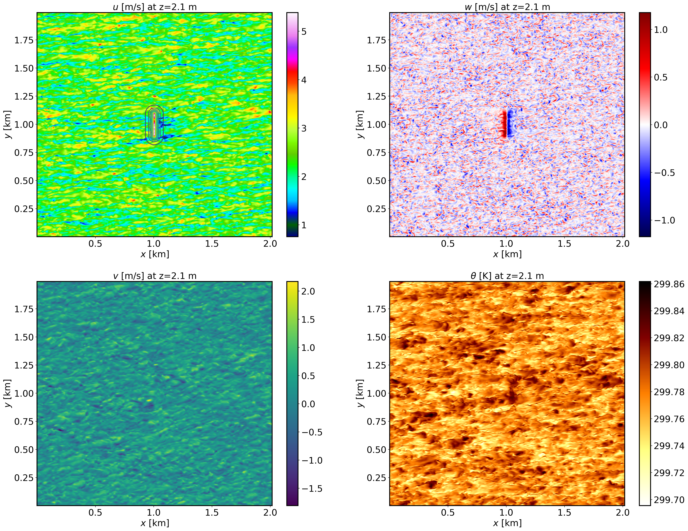
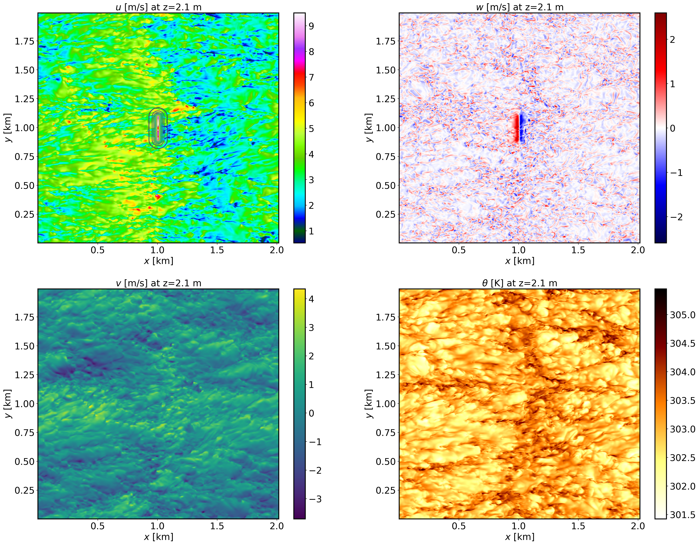
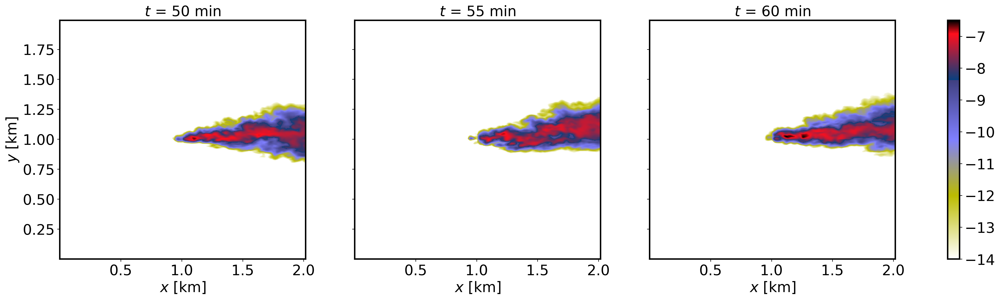
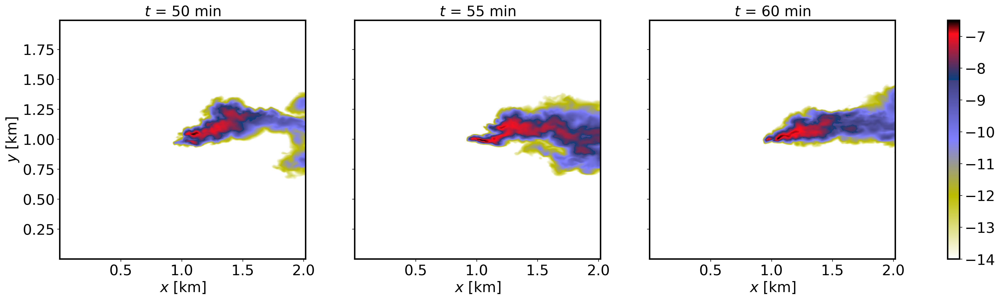
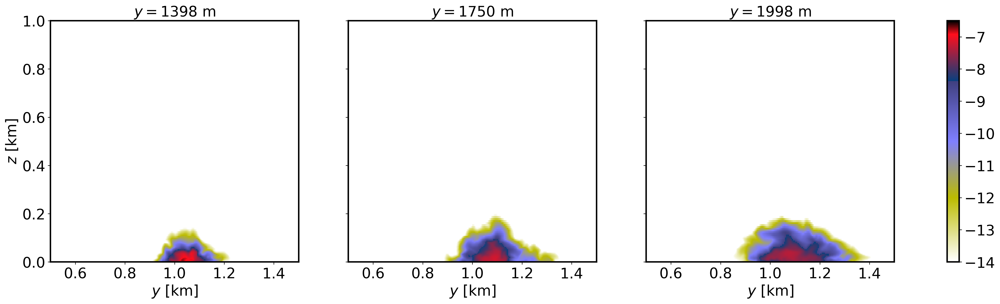
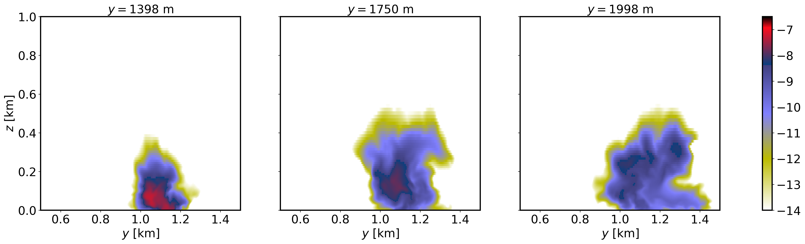

2.7. Passive scalar transport and dispersion over an idealized hill
2.7.1. Background
This is an example of transport and dispersion of a scalar in the presence of idealized topography. The idealized terrain is based on the Witch of Agnesi, and a passive tracer is released on the lee side of the hill.
2.7.2. Input parameters
Number of grid points: \([N_x,N_y,N_z]=[504,498,90]\)
Isotropic grid spacings in the horizontal directions: \([\Delta x,\Delta y]=[4,4]\) m, the minimum vertical grid at the surface is \(\Delta z=3.6\) m and stretched with verticalDeformFactor \(=0.26\)
Domain size: \([2.16 \times 1.99 \times 1.44]\) km
Model time step: \(0.01\) s
Advection scheme: 5th-order upwind
Time scheme: 3rd-order Runge Kutta
Geostrophic wind: \([U_g,V_g]=[8,0]\) m/s
Latitude: \(54.0^{\circ}\) N
Surface potential temperature: \(300\) K
Potential temperature profile:
Rayleigh damping layer: uppermost \(600\) m of the domain
Initial perturbations: \(\pm 0.25\) K
Depth of perturbations: \(375\) m
Top boundary condition: free slip
Lateral boundary conditions: periodic
Time period: \(1\) h
2.7.3. Execute FastEddy
See Running under NSF NCAR HPC for general instructions on how to build and run FastEddy on NSF NCAR’s High Performance Computing machines.
Note that this example requires creation of a terrain and source specification files. Follow the sequence of steps below.
Execute the Jupyter notebook provided in tutorials/notebooks/Dispersion_PrepTerrain.ipynb to create the topography file Topography_504x498.dat that corresponds to a Witch of Agnesi hill of 15 m height.
Execute the Jupyter notebook provided in /tutorial/notebooks/Dispersion_PrepAuxSrc.ipynb to create the source specification input file. This example will add two sources at the first vertical grid levels upstream (x = 930 m) and downstream (x = 1082 m) of the hill. The emissions begin \(45\) min into the simulation.
Two FastEddy simulation setups are provided for this tutorial, corresponding to weakly stable (Example07_DISPERSION_SBL.in) and convective conditions (Example07_DISPERSION_CBL.in). The terrain preparation and source input file steps only need to be carried out once. Additionally, the CBL case is set up to demonstrate the use of a rank-wise binary output mode in FastEddy for efficient dumping of the model state to file. Personalize and use the batch submission script /scripts/batch_jobs/fasteddy_convert_pbs_script_casper.sh which will invoke a python script (/scripts//python_utilities/post-processing/FEbinaryToNetCDF.py) to convert the rank-wise binary files from each output timestep into a single aggregate NetCDF output file per timestep analogous to those resulting from the SBL case.
2.7.4. Visualize the output
Open the Jupyter notebook entitled MAKE_FE_TUTORIAL_PLOTS.ipynb.
Under the “Define parameters” section, modify
path_base, specifying the full path to the Example07_DISPERSION_SBL subdirectory, but don’t include Example07_DISPERSION_SBL subdirectory. Be sure to include a trailing slash/).Under the “Define parameters” section, modify
caseto set its value todispersion.Run the Jupyter notebook.
The resulting XY cross section png plots will be placed in a FIGS subdirectory of the Example07_DISPERSION_SBL directory.
XY-plane views of instantaneous velocity components and potential temperature for the SBL case at \(t=1\) h (FE_DISPERSION.360000). The contour lines in the \(u\) panel display terrain elevation:
{kind=link}

XY-plane views of instantaneous velocity components and potential temperature for the CBL case at \(t=1\) h (FE_DISPERSION.360000). The contour lines in the \(u\) panel display terrain elevation:
{kind=link}

XY-plane views of instantaneous plume dispersion for the SBL case at \(z=30\) m AGL and different times (\(t=50,55,60\) min), corresponding to the windward release:
{kind=link}

XY-plane views of instantaneous plume dispersion for the CBL case at \(z=30\) m AGL and different times (\(t=50,55,60\) min), corresponding to the windward release:
{kind=link}

YZ-plane views of instantaneous plume dispersion for the SBL case at several downstream distances (\(t=1\) h, FE_DISPERSION.360000), corresponding to the windward release:
{kind=link}

YZ-plane views of instantaneous plume dispersion for the CBL case at several downstream distances (\(t=1\) h, FE_DISPERSION.360000), corresponding to the windward release:
{kind=link}

2.7.5. Analyze the output
How does the terrain impact gets altered by the different stability conditions?
What are the differences in plume dispersion between stable and convective condtions?
How does downstream distance affect structure of the plume?